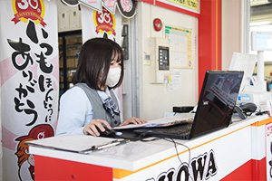
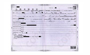
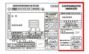
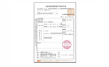
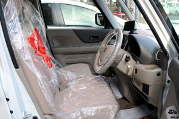
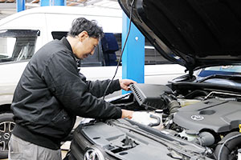
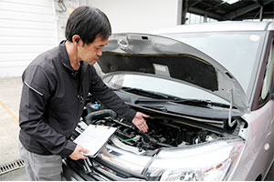
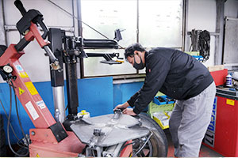

車検の流れ
STEP 1車検を予約する
- 
-
車検証をご準備の上、ご予約ください。
電話予約でもネット予約でもOK！
電話予約の場合は「ホームページを見た」とおっしゃってください。
[北島店]営業時間 平日・土・祝 9：00-18：00 （17：00以降は受付のみ） 定休日 日曜日 / 年末年始・ＧＷ・お盆
[助信店]営業時間 平日・土・祝 9：30-18：00 定休日 日・月曜日 / 年末年始・ＧＷ・お盆


STEP 2車検受付
- 受付にて車検のご案内（愛車のお気づきの点や気になる症状を問診いたします。）
キッズスペースもご用意してますので、小さなお子様連れでも安心してご来店ください。
持ち物
- 
自動車検査証 - 
自動車納税証明書
納税後、間もない場合は必要 - 
自賠責保険証明書
STEP 3点検・整備
- 
- 1.キチンと保護 シートカバーや紙マットでお車を保護してから車検整備に入ります。
- 
- 2.法定56項目を点検 整備記録簿に基づき、ディーラー車検と同じ法定56項を点検します。 外装・フロントガラス・信号用具の点検後にエンジンルームの点検を行います。
- 
-
3.お客様立会いの説明
立ち会い説明の上、お見積もりを提示致します。
お客様不在のディーラー車検と違い、問題があればお客様立ち会いのもとで検査員によりご納得いただけるまでご説明させていただきます。事前お見積もりも受け付けております。
※お見積もりは無料です。
- 
-
4.整備作業
お客様立ち会いの説明後、問題があった重要部品は速やかに交換させていただきます。アップル車検 浜松店の整備料金は全て整備料金一覧表でご確認いただけるので安心です。
※別途、費用が掛かる場合、ご確認をさせていただき、ご了承の上で、整備を行います。
STEP 4精算＆お引渡し

- 点検・整備結果のご説明をした上で、ご精算いただきます。